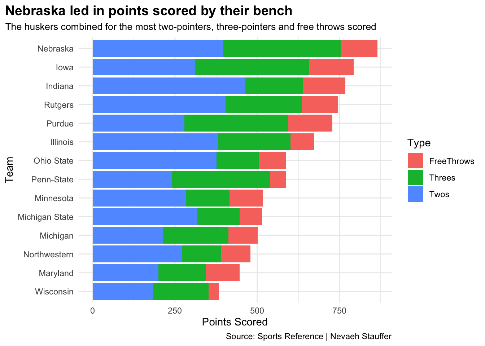
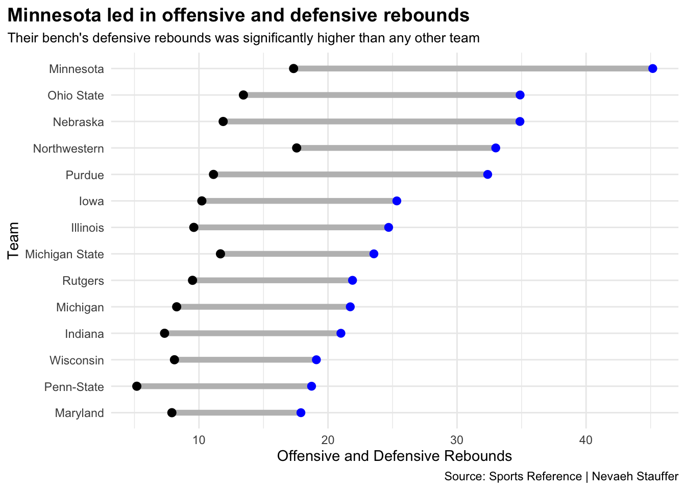

Which Big Ten Team Had the Most Effective Bench Players Last Season?
big-ten
basketball
bench
Author
Nevaeh Stauffer
Published
December 3, 2023
The Big Ten Conference this past season was full of intense competition and each team held a lot of talent. The conference was led by Purdue who went 29-6 on the season and 15-5 in conference play.
A lot of different things can contribute to a team’s success. Whether it’s points, assists or whatever. But another aspect to think about is who is making these things happen. Depth on your team can be helpful so which one of these Big Ten teams had the most depth?
Sports Reference is a sports statistics website that provides the statistics for all players on the roster. It provides the minutes played, every shot attempted and made, steals, assists and lots more. By using these resources, it is easy to determine which team had the most depth.
The first question is, what team had the most minutes played by bench players?
All of the teams have utilized their roster as all of the teams have around 2,000 minutes played for their non-starters. Nebraska led the Big Ten in their bench players minutes played while Maryland was the team who utilized their bench the least. But what is interesting is that Maryland was one of the teams that made the NCAA tournament.
So while teams like Nebraska had the most bench player minutes, did these players do enough on the court to be useful to their teams?
Code
pointsstacked <- bigten |>filter(Starter =="B") |>group_by(Team) |>summarize(TotalTwos =sum(`2P`),TotalThrees =sum(`3P`),FreeThrows =sum(FT) ) |>mutate(Twos = TotalTwos*2,Threes = TotalThrees*3 ) |>select(Team, Twos, Threes, FreeThrows) |>pivot_longer(cols=-Team, names_to="Type", values_to ="Points")ggplot() +geom_bar(data=pointsstacked, aes(x =reorder(Team, Points), weight=Points, fill=Type)) +coord_flip() +labs(title ="Nebraska led in points scored by their bench",subtitle ="The huskers combined for the most two-pointers, three-pointers and free throws scored",x ="Team",y ="Points Scored",caption="Source: Sports Reference | Nevaeh Stauffer" ) +theme_minimal() +theme(plot.title =element_text(color ="black", size =14, face ="bold"),plot.subtitle =element_text(color ="black", size =10),plot.title.position ="plot" )

Just like in minutes played, Nebraska led the Big Ten last season for the most points scored by non-starting players. Rutgers, Iowa and Indiana weren’t too far behind. What else did these players do to contribute?
What about rebounding? Which team’s bench players were most helpful on the boards?
Code
ggplot() +geom_dumbbell(data=stats, aes(y=reorder(Team, avDrebounds), x=avDrebounds, xend=avOrebounds),size =2,colour ="grey",colour_x ="blue",colour_xend ="black") +labs(title ="Minnesota led in offensive and defensive rebounds",subtitle ="Their bench's defensive rebounds was significantly higher than any other team",x ="Offensive and Defensive Rebounds",y ="Team",caption="Source: Sports Reference | Nevaeh Stauffer" ) +theme_minimal() +theme(plot.title =element_text(color ="black", size =14, face ="bold"),plot.subtitle =element_text(color ="black", size =10),plot.title.position ="plot" )

Minnesota, Nebraska and Ohio State were teams that consistently ranked towards the top of the charts in minutes played, points scored and rebounds on the offensive and defensive sides. They were the top 3 teams that had the most depth and utilized it. What is interesting about that is that none of them made the NCAA tournament. So is depth helpful or is it all about the quality of your players?